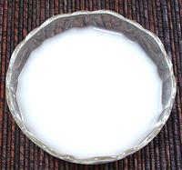

|
Rice Porridge, QuickKorea - Juk | ||||
| Makes: Effort: Sched: DoAhead: |
1/2 cup * 6 min Yes |
This juk is a very quick one to use as an ingredient in kimchee. For normal service, juk is made from rice or some other grain, long simmered with other ingredients. | |||
|
|
1 3/4 |
T c |
Rice Flour Water |
Make: - (6 min)
|